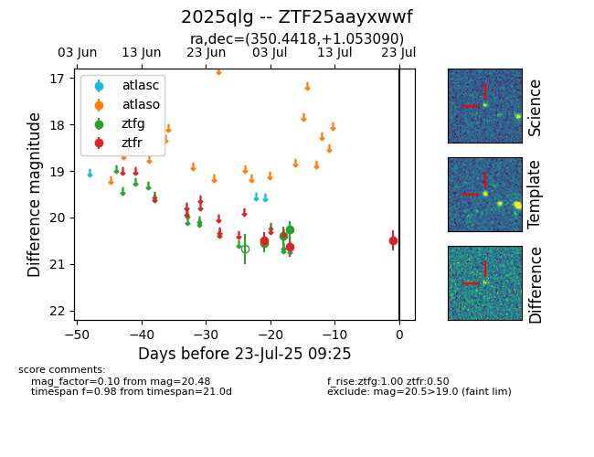

Target ZTF25aayxwwf at 2025-07-23 12:37, see:
FINK: fink-portal.org/ZTF25aayxwwf
Lasair: lasair-ztf.lsst.ac.uk/objects/ZTF25aayxwwf
ALeRCE: alerce.online/object/ZTF25aayxwwf
TNS: wis-tns.org/object/2025qlg
YSE: ziggy.ucolick.org/yse/transient_detail/2025qlg
alt names
ZTF25aayxwwf (ztf,fink)
2025qlg (tns,yse)
coordinates:
equatorial (ra, dec) = (350.4418,+1.05309)
galactic (l, b) = (81.8792,-54.50942)
photometry
last ztfg=20.26, ztfr=20.48
3 ztfg, 3 ztfr detections
